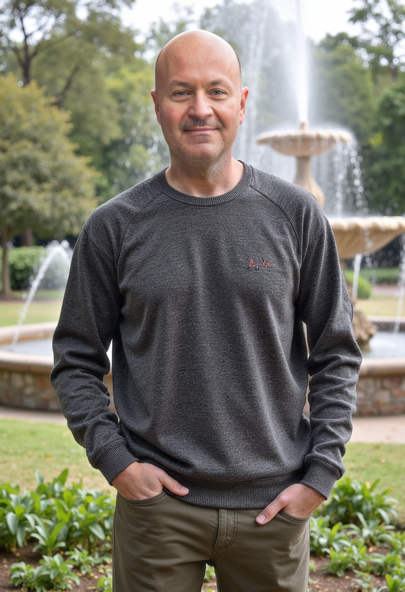

Brett Smith
ğŸ Home
Email: brett03112@gmail.com
📱 Phone: (606) xxx-xxxx 'Please ask for my phone number!!"
🔗 LinkedIn Profile
🔗 GitHub Profile
💼 Work Experience
📠Education
🚀 Skills
ğŸ› ï¸ Projects
📠Education
High School Diploma/ Lincoln County High School, Stanford, KY
June, 1995
Code: You Software Development with C#
December 2024